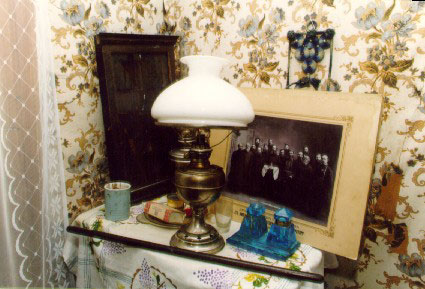
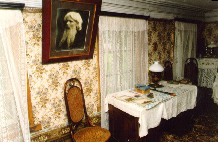
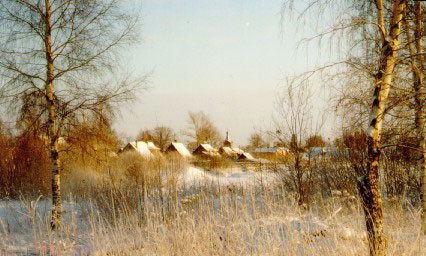

Old Believers.
Piirissaare is very different from rest of Estonia because of its archaic, ethnic and cultural composition. Most of the habitants are Old Believers who first settled on the island in the 18th century to find a peaceful place beyond the reach of the reforms under the Russian Orthodox Church.
Piirissaare First written documents from the Old Believers church on Piirissaare date back to 1802. Old Believers have been living in a separate community on the island in small settlements, forging a living from fishing and vegetable growing. Preserving this interesting and unique culture is considered an important objective for the area.
Piirissaare local municipality and library.
Piirissaare local municipality was established in 1996 when the parish received an official recognition as an independent parish. The current building was built in 1960s and in addition to the local municipality it also includes a public library, public Internet point and a day care center, which is open during summers. Bookkeeper of the municipality resides in county center Tartu, which is on the mainland.